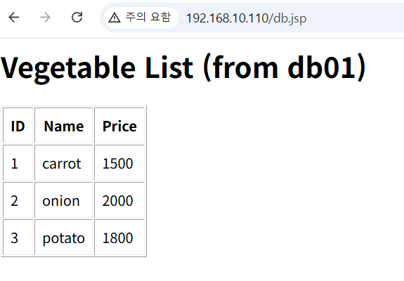
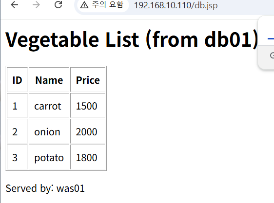
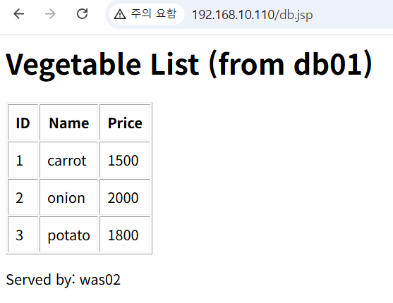
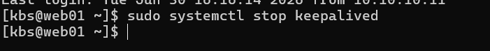
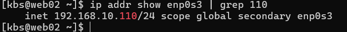
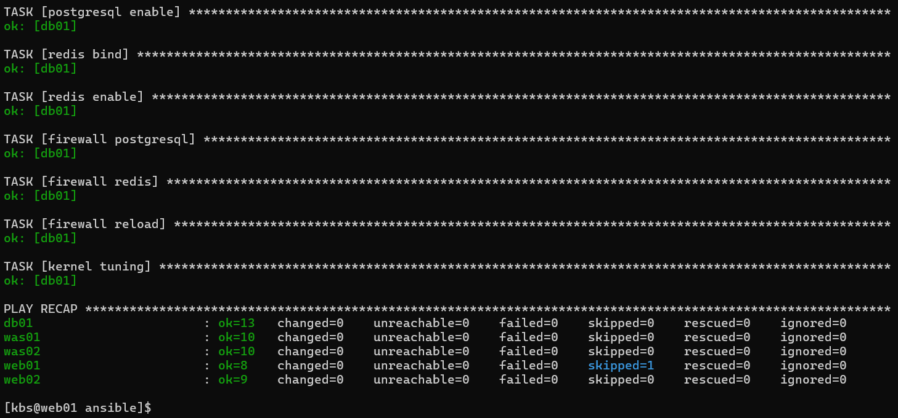
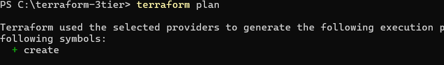
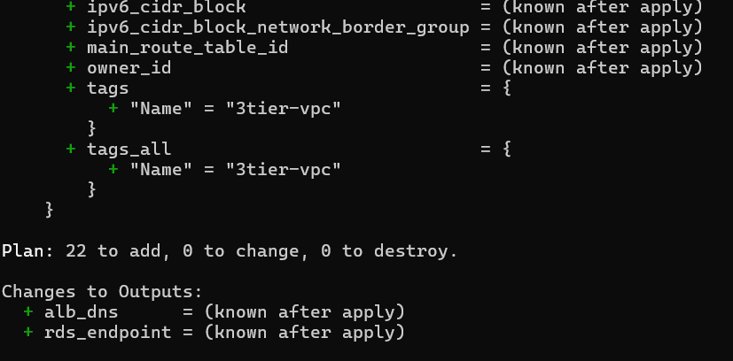

Rocky Linux 8.10 기반 3-Tier 웹 서비스 인프라를 폐쇄망 환경에서 수동 구축하고, 이중화와 자동화를 적용한 뒤 Terraform으로 AWS 이관을 설계한 프로젝트입니다.
GitHub Repository| 서버 | 역할 | 관리망 | 서비스망 |
|---|---|---|---|
| web01 | Apache, DNF Repo, NTP, keepalived MASTER | 192.168.10.111 | 10.10.10.11 |
| web02 | Apache, keepalived BACKUP | 192.168.10.114 | 10.10.10.14 |
| was01 | Tomcat 9, JDK 17 | 192.168.10.112 | 10.10.10.12 |
| was02 | Tomcat 9, JDK 17 | 192.168.10.115 | 10.10.10.15 |
| db01 | PostgreSQL 15, Redis | 192.168.10.113 | 10.10.10.13 |
SELinux Enforcing 환경에서 발생한 문제들을 로그와 진단 도구로 원인을 특정하고 해결한 기록입니다.
postgresql_db_t SELinux 컨텍스트 미설정
semanage fcontext + restorecon으로 /pgdata, /pgwal에 컨텍스트 적용
setsebool -P httpd_can_network_connect on
getsebool로 확인)
setsebool -P tomcat_can_network_connect_db on
ClassNotFoundException: com.ongres.scram
common.jar, client.jar을 /usr/share/tomcat/lib/에 복사
--> 누락으로 AJP 주석과 충돌
xmllint --noout으로 진단, 누락된 --> 삽입
VIP(192.168.10.110)를 통해 브라우저에서 접속. 사용자 → Apache → Tomcat → PostgreSQL 전 구간이 정상 동작합니다.

같은 VIP 주소로 새로고침 시 was01과 was02가 번갈아 응답합니다.


web01에서 keepalived를 중지하면, VIP(192.168.10.110)가 web02로 자동 전환됩니다.


5대 서버 전체에 플레이북 실행. 모든 서버 failed=0으로 완료되었습니다.

AWS 인프라 22개 리소스 생성 계획이 검증되었습니다.


| 온프레미스 | AWS | |
|---|---|---|
| Apache + keepalived VIP | → | Application Load Balancer |
| Tomcat × 2 (고정) | → | EC2 Auto Scaling Group (2~5대) |
| PostgreSQL 15 (단일) | → | RDS PostgreSQL Multi-AZ |
| Redis (단일) | → | ElastiCache Redis (2노드) |
| 서비스망 / 관리망 | → | VPC + Public / Private Subnet |
| firewalld | → | Security Group |
| Ansible | → | Terraform (IaC) |